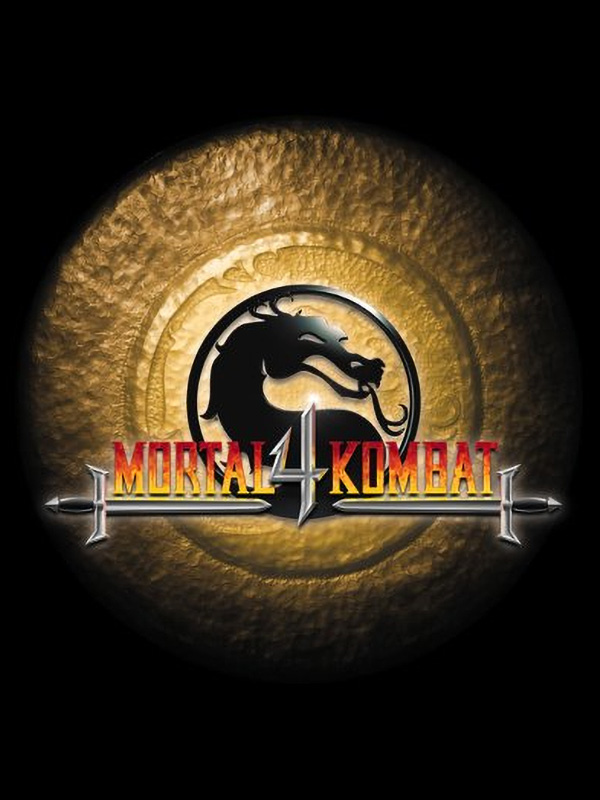

 |
|
| Tiempo de juego | No Jugado |
| Última actividad | Nunca |
| Añadido | 20/11/2025 23:39:42 |
| Modificado | 20/11/2025 23:44:04 |
| Estado de finalización | Not Played |
| Librería | Playnite |
| Fuente | |
| Plataforma | PC (Windows) |
| Fecha de lanzamiento | 1/12/1998 |
| Puntuación de la Comunidad | |
| Puntuación de la Crítica | |
| Puntuación de usuario | |
| Género | Fighting |
| Desarrollador | Digital Eclipse |
| Editor | Gradiente Midway Games |
| Característica | Single Player |
| Enlaces | |
| Tag | |
Este es el momento bisagra de la saga. Mortal Kombat 4 fue el salto al vacío hacia el 3D. Dejamos atrás los sprites de actores reales para entrar en el mundo de los polígonos. Hoy se ve raro, sí, pero en el 97 esto era tecnología de punta.
La jugabilidad cambió, pero no tanto. Sigue sintiéndose como un Mortal Kombat clásico, pero ahora podés moverte un poquito hacia los costados en 3D para esquivar. La gran novedad, lo que rompió todo, fueron las Armas.
Ahora cada luchador tiene su arma personal. Scorpion saca una espada, Sub-Zero un cetro de hielo, Sonya una rueda con cuchillas. Lo genial es que podés sacar el arma, pegarle al otro, que se te caiga, y que el rival la agarre y te mate con tu propia espada. También podés agarrar piedras o cabezas del piso para tirárselas.
Y por favor, mirá los finales. Las cinemáticas "CGI" de la época son tan malas y las voces tan exageradas que se dieron la vuelta y son obras maestras de la comedia involuntaria. "I'm soooo gaaay"... ah no, pará, no decía eso Jarek, pero sonaba igual. ¡Es cultura general!